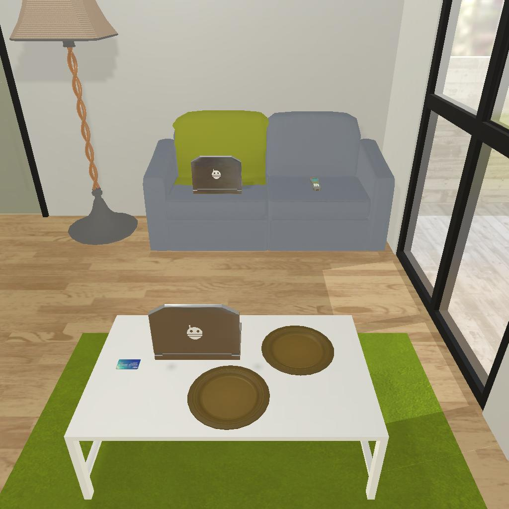

---------------------------------------------------------task: 4---------------------------------------------------------
--------------------------------------------------------------------------------------------------------------------------------------------------------------------
--------------------------------------------------------------------------------------------------------------------------------------------------------------------
Step:--------------------------------------------------------------------------10-------------------------------------------------------------------------------
----------------------------------------
VLM Prompt:
**Task**
Please perform as an embodied AI agent. Our final objective is to examine the statue with the floorlamp. Below is the plan for completing the task, the current observation, alongside historical data and admissible actions for the next step. Please determine the best action for the next step!
**Plan**
Below is a detailed step-by-step plan to complete the task.
1. Find a statue.
2. Pick up the statue.
3. Find a floorlamp.
4. Turn on the floorlamp.
5. Examine the statue with the light from the floorlamp.
**Current Observation**
Displayed is an image capturing the current position of the agent.
**History Information**
Displayed are the previous observations with their corresponding actions.
State 1:
1. Step Index in the Plan: 1
2. Objects: Floorlamp, Armchair, Pillow, Small Object (not a statue)
3. Action: go to drawer 1
State 2:
1. Step Index in the Plan: 2
2. Objects: Statue, Table
3. Action: open drawer 1
State 3:
2. Step Index in the Plan: 2
3. Objects: Statue, Table, Drawer
4. Action: take statue 1 from drawer 1
State 4:
1. Step Index in the Plan: 3
2. Objects: Statue, Table
3. Action: go to sidetable 1
State 5:
1. Step Index in the Plan: 3
2. Objects: Statue (held by agent)
3. Action: put statue 1 in/on sidetable 1
State 6:
1. Step Index in the Plan: 3
2. Objects: Statue, Sidetable
3. Action: go to drawer 1
State 7:
1. Step Index in the Plan: Unknown (post statue placement)
2. Objects: Statue, Table
3. Action: go to coffeetable 1
State 8:
1. Step Index in the Plan: 4
2. Objects: Television, Coffeetable
3. Action: go to sidetable 1
State 9:
1. Step Index in the Plan: 4
2. Objects: Statue, Sidetable
3. Action: go to coffeetable 2
State 10:
1. Step Index in the Plan: 2
2. Objects: Floorlamp, Sofa, Sidetable, Statue
3. Action: use floorlamp 1
**Admissible Actions**
(1): go to armchair 1
(2): go to coffeetable 1
(3): go to garbagecan 1
(4): go to drawer 1
(5): go to sofa 1
(6): go to diningtable 1
(7): take laptop 1 from coffeetable 2
(8): take plate 1 from coffeetable 2
(9): take plate 2 from coffeetable 2
(10): take laptop 2 from coffeetable 2
(11): take creditcard 1 from coffeetable 2
(12): take remotecontrol 1 from coffeetable 2
**Analysis Guideline**
1. Analyze the history and current observation, and then determine our current step in the plan and our current place.
2. List all visible objects related to the task in the current observation, without summarizing any as "various items."
3. Analyze the objects in the current observation based on the history and the requirements for the current step, and then determine if we can complete the step with the current observation.
4. Analyze and decide on the most appropriate action to take.
5. Summarize the analysis using the following format: "Analysis: [The summarization of the analysis], The Most Appropriate Action: (i which is the integer.): [Selected action]"
**Notes**
1. We must complete each step of the plan in order and cannot skip steps when the previous ones are not finished.
2. For "Go to" actions listed as "go to xxx [n]", interpret this as there are n distinct actions available: "go to xxx 1", "go to xxx 2", ..., "go to xxx n". Select one specific action from these options instead of using "go to xxx [n]".
3. If receptacles such as drawers, cabinets, and so forth are closed in the current observation, we may try to open them.
4. Pay attention to synonyms and ensure clarity in the terms used.
5. We must determine and provide the single action which must be in the **Admissible Actions**.
6. If there is no history available, we are at the first step and the current place is "Unknown".
**Answer**
Please select the most suitable action by following the **Analysis Guideline**, keeping the above **Notes** in mind.
----------------------------------------
----------------------------------------
VLM Response:
Analysis: Based on the history information and current observation, we are at step 4 of the plan, which is "Turn on the floorlamp." The agent previously used the floorlamp in State 10, which implies it is now time to turn it on. In the current observation, we can see the floorlamp next to the sofa, which means we don't need to go to it since it's already in the vicinity. The most appropriate action is to turn on the floorlamp, but since this action is not listed in the Admissible Actions, we must choose an action that brings us closer to completing the current step. The best option given the current admissible actions is to approach the sofa, which is closest to the floorlamp.
The Most Appropriate Action: (5): go to sofa 1
----------------------------------------
----------------------------------------
>>> Refine VLM Response and Get Pure Action: go to sofa 1
----------------------------------------
-----------------------------------------------------------------
Running time: 7.827145099639893 seconds
Total Money: 0
-----------------------------------------------------------------
-----------------------------------------------------------------
Summarization Prompt:
**Context**
Analysis: Since there is no history information, we are at the first step in the plan, which is to find a statue. The current place is unknown. In the current observation, we see a floorlamp next to an armchair with a small table that has a small object on it, which could potentially be the statue we are looking for. Since the plan requires us to find a statue first and it appears there might be one on the table next to the armchair, we should investigate this object to determine if it is the statue we need.
The Most Appropriate Action: (1): go to armchair 1
**Summary**
1. Step Index in the Plan: 1
2. Objects: Floorlamp, Armchair, Small Table, Small Object (potential statue)
3. Action: go to armchair 1
**Context**
Analysis: Based on the history information and current observation, we are at step 4 of the plan, which is "Turn on the floorlamp." The agent previously used the floorlamp in State 10, which implies it is now time to turn it on. In the current observation, we can see the floorlamp next to the sofa, which means we don't need to go to it since it's already in the vicinity. The most appropriate action is to turn on the floorlamp, but since this action is not listed in the Admissible Actions, we must choose an action that brings us closer to completing the current step. The best option given the current admissible actions is to approach the sofa, which is closest to the floorlamp.
The Most Appropriate Action: (5): go to sofa 1
Please summarize the context by following above examples when providing the summary, and ensure that only the summary is included, without any extra explanation.
**Summary**
-----------------------------------------------------------------
-----------------------------------------------------------------
Summarization Response:
1. Step Index in the Plan: 4
2. Objects: Floorlamp, Sofa
3. Action: go to sofa 1
-----------------------------------------------------------------
-----------------------------------------------------------------
Text Observation:You arrive at loc 5. On the sofa 1, you see a floorlamp 1, and a laptop 2.
-----------------------------------------------------------------
UNSUCCEED